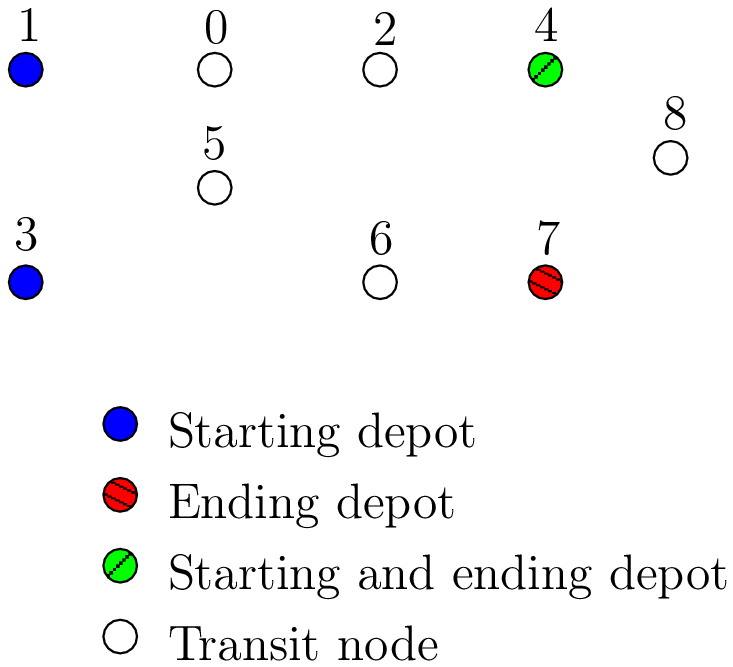
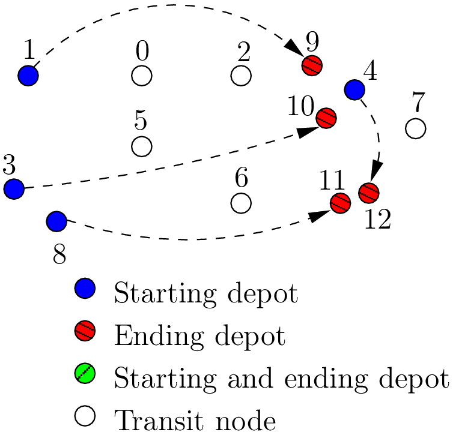
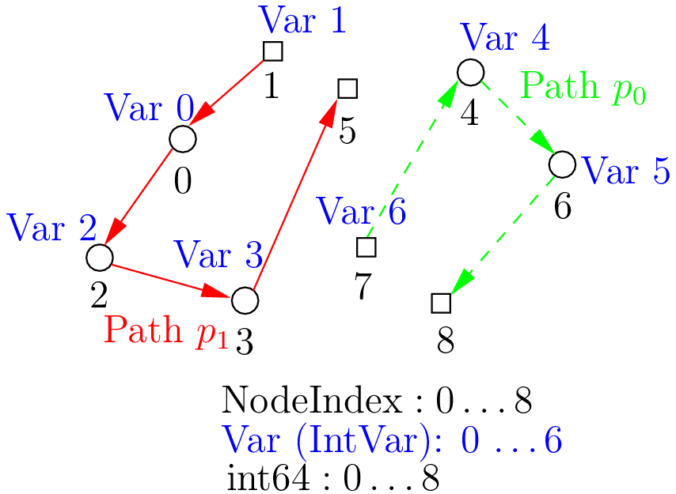
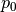
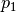

9.4. The model behind the scenes: the main decision variables
We present the main decision variables of the model used in the RL. In the section The Routing Library (RL) of the chapter Under the hood, we describe the inner mechanisms of the RL in details.
A Routing Problem is defined on a graph (or a network). The nodes of the graph have unique NodeIndex identifiers. Internally, we use an auxiliary graph to model the Routing Problem. In RL jargon, the identifiers of the nodes of this auxiliary graph are called int64 indices. Be careful not to mix them up. To distinguish one from the other, we use two non-compatible types: NodeIndex and int64.
A node of the original graph can be:
- a transit node;
- a starting depot;
- an ending depot;
- a starting and an ending depot.
A depot cannot be an transit node and a transit node can only be visited by at most one vehicle in a solution. The number of vehicles can be arbitrary (within the limit of an int).
9.4.1. The main idea: the node decision variables
The model is node based: routes are paths linking nodes. For almost each node[1], we keep an IntVar* variable (stored internally in a private std::vector<IntVar*> nexts_) that tells us where to go next (i.e. to which node). To access these variables, use the NextVar() method (see below). These variables are the main decision variables of our model.
For a transit node that is uniquely visited by a vehicle[2], we only need one variable. For a depot where only a route finishes, it is even easier since we don’t need any variable at all because the route stops at this depot and there is no need to know where to go next. The situation is a little bit messier if for instance we have two vehicles starting from the same depot. One variable will not do. In the RL, we deal with this situation by duplicating this depot and give each node its own IntVar* variable in the std::vector<IntVar*> nexts_.
Internally, we use int64 indices to label the nodes and their duplicates. These int64 indices are the identifiers of the nodes of an auxiliary graph we present in the next sub-section.
The domains of the IntVar nexts_ variables consist of these int64 indices. Let’s say we have a solution solution and a RoutingModel object routing. In the following code:
int64 current_node = ...
int64 next_node_index = solution.Value(routing.NextVar(current_node));
next_node_index is the int64 index of the node following immediately the int64 current_node in the Assignment solution.
Before we present the main decision variables of our model, we need to understand the difference between NodeIndex node identifiers and int64 indices representing nodes in solutions.
| [1] | Not every node, only the nodes that lead somewhere in the solution. Keep reading. |
| [2] | Remember that we don’t allow a node to be visited more than once, i.e. only one vehicle can visit a node in a solution. |
9.4.2. The auxiliary graph[3]
To understand how the auxiliary graph is constructed, we need to consider a more general Routing Problem than just a TSP with one vehicle. We’ll use a VRP with four vehicles/routes.
Let’s take the original graph of the next figure:
You can of course number (or name) the nodes of the original graph any way you like. For instance, in the TSPLIB,
nodes are numbered from 1 to  . In the RL, you must number your original nodes from 0 to
. In the RL, you must number your original nodes from 0 to  .
If you don’t follow this advice, you might get some surprises!
.
If you don’t follow this advice, you might get some surprises!
Warning
Always use NodeIndexes from 0 to for your original graph!
There are nine nodes of which two are starting depots (1 and 3), one is an ending depot (7) and one is a starting and ending depot (4). The NodeIndexes[4] range from 0 to 8.
In this example, we take four vehicles/routes:
- route 0: starts at 1 and ends at 4
- route 1: starts at 3 and ends at 4
- route 2: starts at 3 and ends at 7
- route 3: starts at 4 and ends at 7
The auxiliary graph is obtained by keeping the transit nodes and adding a starting and ending depot for each vehicle/route if needed like in the following figure:

Node 1 is not duplicated because there is only one route (route 0) that starts from 1. Node 3 is duplicated once because there are two routes (routes 1 and 2) that start from 3. Node 7 has been duplicated once because two routes (routes 2 and 3) end at 7 and finally there are two added copies of node 4 because two routes (routes 0 and 1) end at 4 and one route (route 3) starts from 4.
The way these nodes are numbered doesn’t matter for the moment. For our example, the next figure shows this numbering:
Note that the int64 indices don’t depend on a given solution but only on the given graph/network and the depots.
| [3] | This sub-section is a simplified version of the section The auxiliary graph from the chapter Under the hood. |
| [4] | We should rather say NodeIndices but we pluralize the type name NodeIndex. Note also that the NodeIndex type lies inside the RoutingModel class, so we should rather use RoutingModel::NodeIndex. |
What is an auxiliary graph?
An auxiliary graph is a graph constructed from the original graph. It helps to model a problem. In our case, the auxiliary graph allows us to model different routes.
9.4.3. How to switch from NodeIndex to int64 and vice-versa?
A NodeIndex behaves like a regular int but it is in fact an IntType. We use IntTypes to avoid annoying automatic castings between different integer types and to preserve a certain type-safety. A NodeIndex is a NodeIndex and shouldn’t be compatible with anything else. A value() method allows the cast thought:
RoutingModel::NodeIndex node(12);
// the next statement fails to compile
int64 myint = node;
// this is permitted
int64 myint = node.value();
Behind the scene, a static_cast is triggered. If you are following, you’ll understand that
RoutingModel::NodeIndex node = 12;
fails to compile. This is exactly the purpose of the IntType class[5].
| [5] | Have a look at base/int-type.h if you want to know more about the IntType class. |
If you need to translate an int64 index in a solution to the corresponding NodeIndex node or vice-versa, use the following methods of the RoutingModel class:
NodeIndex IndexToNode(int64 index) const;
int64 NodeToIndex(NodeIndex node) const;
They are quicker and safer than a static_cast and ... give the correct results!
Warning
Try to avoid RoutingModel::NodeIndex::value() unless really necessary.
Warning
NodeIndexes and int64s don’t necessarily coincide!
How can you find the int64 index of a depot? You shouldn’t use the method NodeToIndex() to determine the int64 index of a starting or ending node in a route. Use instead
int64 Start(int vehicle) const;
int64 End(int vehicle) const;
where vehicle is the number of the vehicle or route considered.
Warning
Never use NodeToIndex() on starting or ending nodes of a route.
9.4.4. How to follow a route?
Once you have a solution, you can query it and follow its routes using the int64 indices:
RoutingModel routing(10000, 78); // 10000 nodes, 78 vehicles/routes
...
const Assignment* solution = routing.Solve();
...
const int route_number = 7;
for (int64 node = routing.Start(route_number); !routing.IsEnd(node);
node = solution->Value(routing.NextVar(node))) {
RoutingModel::NodeIndex node_id = routing.IndexToNode(node);
// Do something with node_id
...
}
const int64 last_node = routing.End(route_number);
RoutingModel::NodeIndex node_id = routing.IndexToNode(last_node);
// Do something with last node_id
...
We have used the IsEnd(int64) method as condition to exit the for loop. This method returns true if the int64 index represent an end depot. The RoutingModel class provides also an IsStart(int64) method to identify if an int64 index corresponds to the start of a route.
To access the main decision IntVar variables, we use the NextVar(int64) method.
9.4.5. Not all int64 indices have a corresponding IntVar nexts_ variable
Only internal nodes that can lead somewhere possess a decision variable. Only the nodes that are visited and the starting depots have a main decision IntVar variable. There are 9 original nodes in the next figure. They have a NodeIndex ranging from 0 to 8. There are 2 starting depots (1 and 7) and 2 ending depot (5 and 8). Route 0 starts at 1 and ends at 5 while route 1 starts at 7 and ends at 8.
Because nodes 5 and 8 are ending nodes, there is no nexts_ IntVar attached to them.
The solution depicted is:
- Path  : 1 -> 0 -> 2 -> 3 -> 5
- Path  : 7 -> 4 -> 6 -> 8
If we look at the internal int64 indices, we have:
- Path : 1 -> 0 -> 2 -> 3 -> 7
- Path : 6 -> 4 -> 5 -> 8
There are actually 9 int64 indices ranging from 0 to 8 because in this case there is no need to duplicate a node. As you can see in the picture, there are only 7 nexts_ IntVar variables. The following code:
LG << "Crash: " << Solution->Value(routing.NextVar(routing.End(0)));
compiles fine but triggers the feared
Segmentation fault
As you can see, there is no internal control on the int64 index you can give to methods. If you want to know more about the way we internally number the indices, have a look at the sub-section nexts_ variables.
Notice also that the internal int64 index of the node with NodeIndex 6 is... 5 and the int64 index of the node with NodeIndex 7 is...6!
9.4.6. To summarize
Here is a little summary:
Types to represent nodes
| What | Types | Comments |
|---|---|---|
| True node Ids | NodeIndex | Unique for each original node from  to . to . |
| Indices to follow routes | int64 | Not unique for each original node. Could be bigger than
for the starting or ending node of a
route. |
Internally, the RL uses int64 indices and duplicates some nodes if needed (the depots). The main decision variables are IntVar only attached to internal nodes that lead somewhere. Each variable has the whole range of int64 indices as domain[6].
To follow a route, use int64 indices. If you need to deal with the corresponding nodes, use the NodeIndex IndexToNode(int64) method. The int64 index corresponding to the first node of route k is given by:
int64 first_node = routing.Start(k);
and the last node by:
int64 last_node = routing.End(k);
You can also test if an int64 index is the beginning or the ending of a route with the methods bool IsStart(int64) and bool IsEnd(int64).
In a solution, to get the next int64 index next_node of a node given by an int64 index current_node, use:
int64 next_node = solution->Value(routing.NextVar(current_node));
| [6] | The CP solver does an initial propagation to quickly skim these domains. |
Google or-tools |
User's Manual
Google search
Welcome
Tutorial examples
Current chapter
9. Travelling Salesman Problems with constraints: the TSP with time windows
Previous section
9.3. The Travelling Salesman Problem (TSP)
Next section
9.5. The model behind the scene: overview